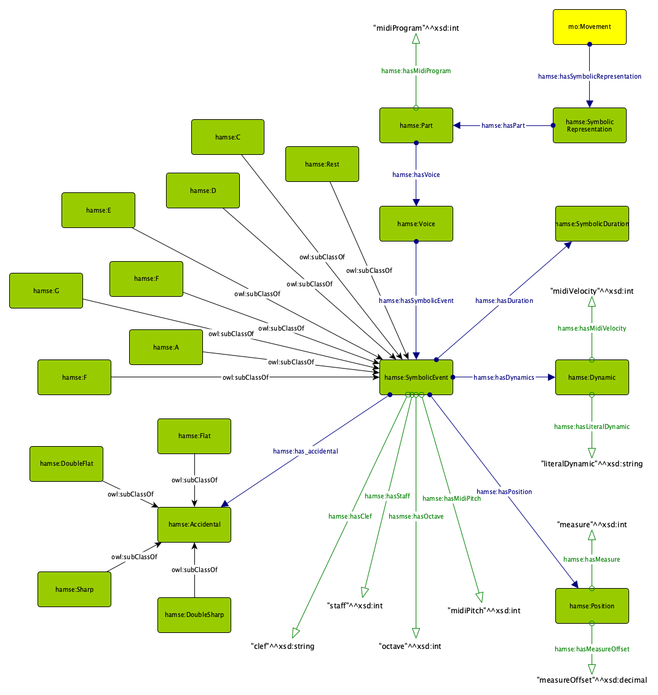
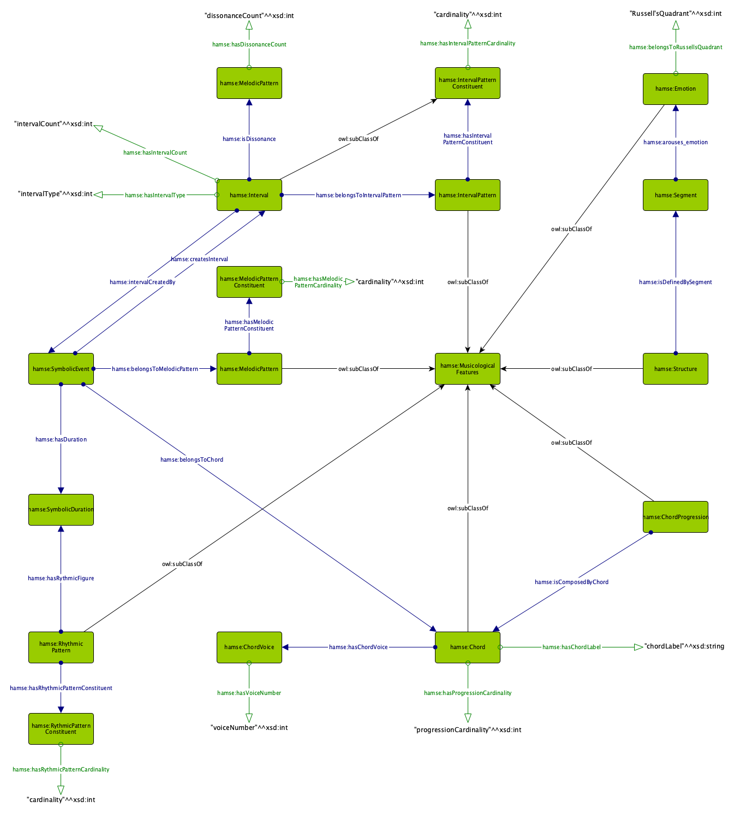

<div id="ajax-page" class="ajax-page-content">
    <div class="ajax-page-wrapper">
        <div class="ajax-page-nav">
            <div class="nav-item ajax-page-prev-next">
                <a class="ajax-page-load" href="portfolio-project-5.html"><i class="lnr lnr-chevron-left"></i></a>
                <a class="ajax-page-load" href="portfolio-project-2.html"><i class="lnr lnr-chevron-right"></i></a>
            </div>
            <div class="nav-item ajax-page-close-button">
                <a id="ajax-page-close-button" href="#"><i class="lnr lnr-cross"></i></a>
            </div>
        </div>

        <div class="ajax-page-title">
            <h1>HaMSE Ontology</h1>
        </div>

        <div class="row">
            <div class="col-sm-8 col-md-8 portfolio-block">
                <div class="owl-carousel portfolio-page-carousel">
                    <div class="item">
                        
                    </div>
                    <div class="item">
                        
                    </div>
                    <div class="item">
                        
                    </div>
                </div>


                <script type="text/javascript">
                    jQuery(document).ready(function($){
                        $('.portfolio-page-carousel').imagesLoaded(function(){
                            $('.portfolio-page-carousel').owlCarousel({
                                smartSpeed:1200,
                                items: 1,
                                loop: true,
                                dots: true,
                                nav: true,
                                navText: false,
                                margin: 10,
                                autoHeight:true
                            });
                        });
                    });
                </script>
            </div>

            <div class="col-sm-4 col-md-4 portfolio-block">
                <!-- Project Description -->
                <div class="project-description">
                    <div class="block-title">
                        <h3>Description</h3>
                    </div>
                    <ul class="project-general-info">
                        <li><p><i class="fa fa-user"></i>Andrea Poltronieri</p></li>
                        <li><p><i class="fa fa-globe"></i> <a href="https://andreapoltronieri.org/HaMSE_project/" target="_blank">Project page</a></p></li>
                        <li><p><i class="fa fa-calendar"></i>2021</p></li>
                    </ul>

                    <!--<p class="text-justify">Aliquam euismod aliquam massa, quis eleifend dui sodales vitae. Interdum et malesuada fames ac ante ipsum primis in faucibus.</p>
                     /Project Description -->

                    <!-- Technology -->
                    <div class="tags-block">
                        <div class="block-title">
                            <h3>Technology</h3>
                        </div>
                        <ul class="tags">
                            <li><a>OWL</a></li>
                            <li><a>RDF</a></li>
                            <li><a>ML</a></li>
                            <li><a>Python</a></li>
                        </ul>
                    </div>
                    <!-- /Technology -->

                    <!-- Share Buttons -->
                    <div class="btn-group share-buttons">
                        <div class="block-title">
                            <h3>Share</h3>
                        </div>
                        <div class="fb-share-button" data-href="https://andreapoltronieri.org/HaMSE_project/" data-layout="button" data-size="small"><a target="_blank" href="https://www.facebook.com/sharer/sharer.php?u=https%3A%2F%2Fandreapoltronieri.org%2FHaMSE_project%2F&amp;src=sdkpreparse" class="fab fa-facebook-f"></a></div>
                        <!--<a class="twitter-share-button" href="https://twitter.com/intent/tweet"><i class="fab fa-twitter"></i> </a>
                        <a href="#" target="_blank" class="btn"><i class="fab fa-dribbble"></i> </a>-->
                        <a href="https://twitter.com/share?ref_src=twsrc%5Etfw" class="twitter-share-button" data-show-count="false">Tweet</a><script async src="https://platform.twitter.com/widgets.js" charset="utf-8"></script>
                    </div>
                    <!-- /Share Buttons -->
                </div>
                <!-- Project Description -->
            </div>
            <div class="col-sm-12 col-md-8 col-lg-8">
                <p>Project developed for master’s course final dissertation. It applies Semantic Technologies to musicological applications. The resulting ontology represents a wide range of musicological aspects (e.g., from the level of single note specificity to the representation of different types of melodic, harmonic, structural and emotional features) and allows interoperability between different representation systems.</p>
            </div>
        </div>
    </div>
</div>
